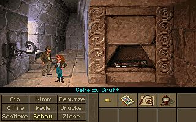
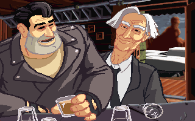

Platz 10
Maniac Mansion, 1987
I actually played this one on the NES – the first edition that let you microwave the hamster.
This one had great replay value since the story played out differently depending on which two characters you chose. Groovy tunes and a great sense of humor made this one of my childhood favorites.
- Link: Maniac Mansion bei eBay
Platz 9
Indiana Jones and the Last Crusade, 1989
This one closely follows the plot of the movie but it has a quirky sense of humor all its own. It also had more replay value than a lot of graphic adventures, thanks to the IQ point system, or "Indy Quotient."
Solving puzzles earned you points and when you started a new game your IQ would carry over and be increased by finding new solutions to puzzles.
Platz 8
Loom, 1990
I was fascinated with Loom's music puzzles. Instead of the traditional object interactions you typically see in graphic adventures, players use simple melodies to cast spells and make their way through the bizarre fantasy world.
As a musician, Loom's use of music to create gameplay was quite significant to me at a young age. It was disappointing the sequels never got made.
- Link: Loom bei eBay
Platz 7
The Secret Of Monkey Island, 1990
Since the Monkey Island series launched when I was five years old, I naturally discovered them later than the rest of the gaming world. After I won my first battle of witty sword fighting, it was clear that this was not your average adventure game and I was hooked.
The pixilated pirate Guybrush stole my heart and the mind-bending puzzles and smart dialogue left me wanting more.
- Link: Unser Test zu The Secret of Monkey Island
- Link: The Secret of Monkey Island bei eBay
- Link: The Secret of Monkey Island Special Edition bei Good Old Games
Platz 6
Monkey Island 2: Lechucks Revenge, 1991
LeChuck's Revenge satiated my appetite for more Guybrush (man was he was super dreamy with that beard). The sequel also amplified my affection for other characters like Elaine Marley and the ever-adorable Wally B. Feed, aka "Bloodnose."
Besides the cast of unique characters, the Monkey Island series is best known for its quality writing and puzzles, and LeChuck's Revenge didn't disappoint.
- Link: Monkey Island 2: Lechucks Revenge bei eBay
- Link: Monkey Island 2: Lechucks Revenge Special Edition bei Steam
Platz 5
Indiana Jones and the Fate of Atlantis, 1992
You'd think we'd get tired of racing Nazis for the control of some occult artifact, but somehow we never do. This adventure saw Indy seeking out Atlantis and though the story was enjoyable, it was the design that won us over by offering us the chance to decide whether we'd like to overcome challenges through brains or brawn. Sadly, the follow up to this title was eventually cancelled.
Platz 4
Sam and Max - Hit The Road, 1993
You'd be hard pressed to find an adventure game that is as comically subversive or as keenly irreverent as this Steve Purcell classic.
The dog and rabbity thing lived in a world that was so full of witty dialogue and clever gags that I often found myself not even caring whether I was making any progress through the story or not.
Platz 3
Maniac Mansion: Day of the Tentacle, 1993
Giant tentacles? Time travel? Tim Schafer? With those three elements it seems almost a foregone conclusion that you're going to have a good time and this sequel certainly didn't disappoint.
The time travel bits were certainly played for laughs, but there were also some interesting puzzle elements that required you to see the bigger picture.
Platz 2
Full Throttle, 1994
Before Tim Schafer decided to make legends brutal or explore the psyche of kids at camp, he developed a post apocalyptic adventure game featuring an outlaw motorcycle gang riding the highways in search of adventure. Full Throttle was the story of Ben, the leader of the Polecats, who fought rival gangs and a plot to eliminate motorcycles from the roads. It remains a classic to fans of the adventure genre, and a game that easily begs for a sequel.
- Link: Full Throttle bei eBay
Platz 1
Grim Fandango, 1998
I still consider Tim Schafer's last LucasArts game to be the greatest adventure game ever made.
The film-noir-meets-afterlife-meets-Mexican-holiday sounds like a storytelling mess but it all works here thanks to the brilliantly dramatic presentation and quirky humor. It wasn't LucasArts' last adventure game, but it was their best.